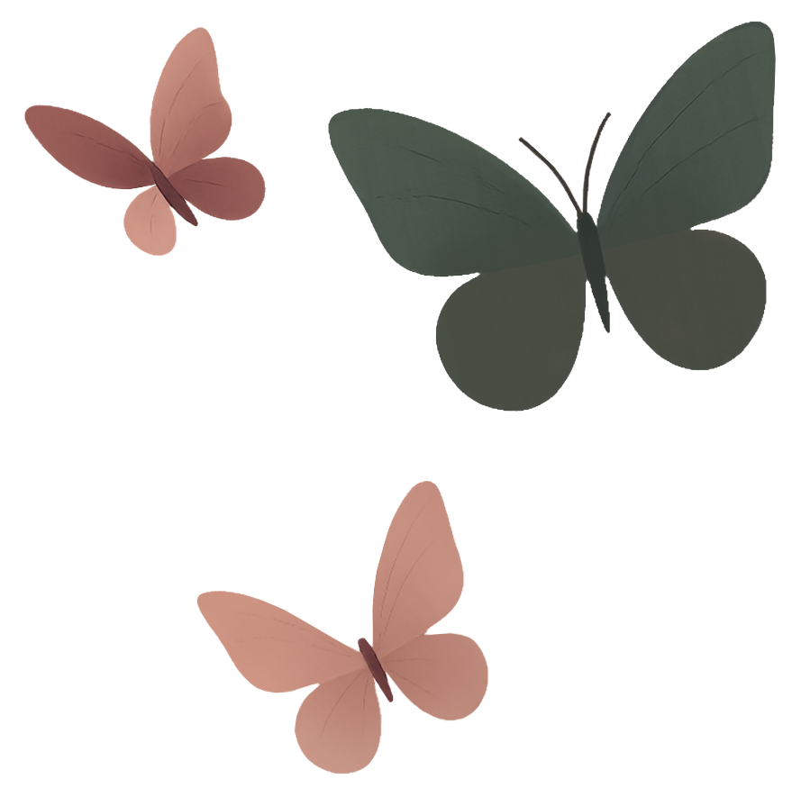
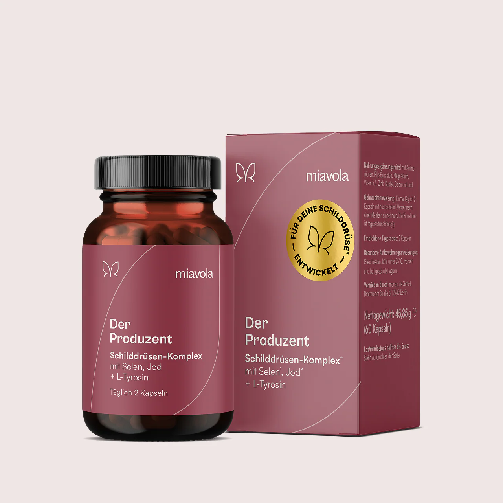

Schilddrüsen-Quiz · Design System & Screen-Katalog
Eine ehrliche Einschätzung — kein Verkauf.
Wiederverwendbare Komponenten, alle States, Mobile & Desktop. Übergabe an Claude Code.
01 · Haltung
North Star
Das Quiz fühlt sich an wie ein Education-Produkt, nicht wie ein Funnel.
Eine Influencerin soll es guten Gewissens empfehlen können. Wer durchgeht, geht informiert und mit echtem Mehrwert raus — auch ohne Kauf. Eine Produktempfehlung darf am Ende stehen, als ruhige Schlussfolgerung. Nie als Druck.
Mehrwert zuerst
Jede Frage und jeder Einschub gibt etwas zurück — Verständnis, kein Datensammeln.
Warm & begleitend
Du-Ansprache, ruhiger Ton, ein Schritt nach dem anderen. Wie eine kundige Freundin.
Ehrlich einordnen
Keine Diagnose, keine Angst. Klartext darüber, was wahrscheinlich los ist — und was nicht.
Kein Preis-Geschrei
Im Flow kein Preis, kein Countdown, kein „Jetzt kaufen“. Produkt erst ganz am Ende.
02 · Komponenten & States
Die wiederverwendbaren Bausteine des Quiz mit allen Zuständen. Radius 8px durchgängig, Pills 99px, Buttons in Wine. Antwortflächen sind großzügig (Touch-Target ≥ 56px).
Antwortoption · Single-Select
Etwas träge, komme aber in Schwungdefault
Etwas träge, komme aber in Schwunghover
Etwas träge, komme aber in Schwungselected
Etwas träge, komme aber in Schwungdisabled
Eingabefeld · 3 States
default
°C
focus
36,4°C
error
42,0°C
Bitte einen Wert zwischen 35,0 und 38,5 eingeben.
Buttons & Fortschritt
primär · sekundär · disabled
Frage 5 von 1242%
MehrfachauswahlOptional
03 · Der Flow — Mobile
Der vollständige Weg von Start bis Ergebnis. Primäres Medium, da das Quiz meist über Influencer-Links auf dem Handy geöffnet wird. Screens in Reihenfolge — horizontal scrollen.
01 · Intro / Start
Was erwartet mich, wie lange, was bekomme ich raus.

Kostenlos
Wie geht es deiner Schilddrüse?
Eine kostenlose Selbsteinschätzung. In etwa 3 Minuten bekommst du eine verständliche, ehrliche Einordnung deiner Situation — ganz ohne Diagnose-Versprechen.
Etwa 3 Minuten, 12 kurze Fragen
Dein Ergebnis sofort — verständlich erklärt
Mehrwert auch ohne Kauf
Kein Login. Keine Diagnose. Du entscheidest, was du teilst.
02 · Single-Select
Eine Antwort. Option 2 ist gewählt.
3/12
Energie & Antrieb
Wie fühlst du dich morgens nach dem Aufwachen?
Ausgeruht und wach
Etwas träge, komme aber in Schwung
Erschöpft, obwohl ich genug geschlafen habe
Wie erschlagen — egal wie lange ich schlafe
03 · Multi-Select · Bildkarten
Mehrere möglich, mit Hinweis. 4 Bild-Karten.
6/12
Mehrfachauswahl
Welche dieser Beschwerden kennst du?
Wähle alles, was auf dich zutrifft — auch Kleinigkeiten.
Müdigkeit & Antriebslosigkeit
Frieren & kalte Hände
Haarausfall & trockene Haut
Gewichtszunahme
04 · Freitext / Zahleneingabe
Mit Validierung. Hier im Focus-State.
9/12
Ein kleiner Selbsttest
Wie ist deine Aufwach-Temperatur?
Miss direkt nach dem Aufwachen, noch im Liegen. Eine niedrige Basaltemperatur kann ein Hinweis sein — kein Beweis.
36,4°C
Gültig zwischen 35,0 und 38,5 °C. Du kannst den Wert auch später nachtragen.
05 · Education-Einschub
Wissens-Moment zwischen Fragen. Nie Produktanbahnung.
Schon gewusst?
Deine Schilddrüse steuert fast jede Zelle deines Körpers.
Über die Hormone T3 und T4 reguliert sie Stoffwechsel, Temperatur, Herzschlag und Stimmung. Läuft sie zu langsam, spürst du das überall gleichzeitig — genau deshalb fühlen sich die Beschwerden oft so diffus an.
Für die Bildung dieser Hormone braucht der Körper u.a. Jod und Selen.1,4
06 · Motivations-Moment
Über die Hälfte geschafft.
Über die Hälfte geschafft.
Noch 5 kurze Fragen — danach ordnen wir alles für dich ein. Du machst das super.
07 · E-Mail-Capture · soft
Optional, kein Gate. Skip immer sichtbar.
Fast geschafft
Dein Ergebnis ist fertig.
Du bekommst es gleich direkt auf dem Bildschirm. Wenn du magst, schicken wir dir zusätzlich vertiefende Infos passend zu deinen Antworten per Mail.
08 · Übergang / Analyse
Ruhiger Moment, bevor das Ergebnis kommt.
Wir werten deine Antworten aus …
Antworten zusammengeführt
Muster erkennen …
Einordnung vorbereiten
04 · Ergebnisseite — das Herzstück
Education-first, in fünf klar getrennten Abschnitten: Validierung → Mechanismus → was das für dich heißt → sanfter nächster Schritt → Empowerment. Der Produktblock ist Teil von (d), als ruhige Schlussfolgerung.
09 · Ergebnis · Mobile (vollständig)
Beispiel-Typ: deutliche Anzeichen.
Deine Einschätzung
Deutliche Anzeichen für eine Unterfunktion.
leichtmöglichdeutlich
aDas sehen wir bei dir
Du hast mehrere typische Beschwerden angegeben, die oft zusammen auftreten. Das ist anstrengend — und du bildest dir das nicht ein.
Anhaltende MüdigkeitFrierenHaarausfallTemp. 36,4 °C
bWas wahrscheinlich los ist
Dein Stoffwechsel läuft vermutlich auf Sparflamme.
Deine Antworten passen zu einer Schilddrüse, die zu wenig Hormone bereitstellt. Weil T3 und T4 fast jede Zelle steuern, macht sich das überall bemerkbar: weniger Energie, frieren, langsamere Haut und Haare.
Wichtig: Das ist eine Einordnung, keine Diagnose. Sicherheit gibt nur ein Blutbild bei deinem Arzt.
cWas das für dich heißt
Beobachte 1–2 Wochen
Notiere Energie, Temperatur & Schlaf. Muster helfen dir und deinem Arzt.
Sprich beim Arzt diese Werte an
TSH, fT3, fT4 und die Antikörper TPO-AK geben Klarheit über Hashimoto.
Sanfte Lifestyle-Hebel
Genug Schlaf, Stress runter, und auf Jod- & Selenzufuhr achten.
dEin möglicher nächster Schritt

Passend zu deinem Ergebnis
Der Produzent®
Schilddrüsen-Komplex
Weil dein Körper für die Hormonbildung Jod und Selen braucht, kann ein gezielter Komplex sinnvoll sein. Der Produzent liefert genau diese Nährstoffe — als Ergänzung, nicht als Ersatz für ärztliche Abklärung.
Selen für eine normale Schilddrüsenfunktion1
Jod trägt zur Produktion von Schilddrüsenhormonen bei4
Kein Muss. Bitte besprich Veränderungen mit deinem Arzt.
Du verstehst deinen Körper jetzt ein Stück besser.
Das ist der wichtigste Schritt. Was du daraus machst, entscheidest du.
Ergebnis-Typen · Header-State
Gleicher Aufbau, drei Stufen. Ton bleibt ruhig.
Niedriger Verdacht
Wenig Anzeichen — vieles spricht für dich.
Möglicher Verdacht
Ein paar Hinweise — gut, genauer hinzusehen.
Deutlicher Verdacht
Deutliche Anzeichen für eine Unterfunktion.
Logik-Hinweis für Claude Code
Score aus den Antworten bestimmt die Stufe. Abschnitte a–e bleiben strukturell identisch — nur Header-Tint, Pill-Text, Mechanismus-Klartext und die Stärke der Empfehlung in (d) variieren. Bei „niedrig“ entfällt der Produktblock oder wird zu einem reinen Wissens-Hinweis.
05 · Der Flow — Desktop
Dieselben Komponenten, für breite Viewports neu komponiert: Quiz zentriert in einer ruhigen Spalte (max. 640px), Ergebnis zweispaltig. Repräsentativ — die übrigen Screens folgen denselben Regeln.
Intro · Desktop
miavola.de/quiz
Kostenlos · 3 Min
Wie geht es deiner Schilddrüse?
Eine kostenlose Selbsteinschätzung mit verständlicher, ehrlicher Einordnung deiner Situation — ganz ohne Diagnose-Versprechen.
Kein Login nötig
Single-Select · Desktop
Frage 3 von 12
Energie & Antrieb
Wie fühlst du dich morgens nach dem Aufwachen?
Ausgeruht und wach
Etwas träge, komme aber in Schwung
Erschöpft, obwohl ich genug geschlafen habe
Wie erschlagen — egal wie lange ich schlafe
Ergebnis · Desktop (zweispaltig)
Deine Einschätzung
Deutliche Anzeichen für eine Unterfunktion.
leichtmöglichdeutlich
Das sehen wir bei dir
Mehrere typische Beschwerden, die oft zusammen auftreten. Du bildest dir das nicht ein.
MüdigkeitFrierenHaarausfall36,4 °C
Was wahrscheinlich los ist
Dein Stoffwechsel läuft vermutlich auf Sparflamme.
Deine Antworten passen zu einer Schilddrüse, die zu wenig Hormone bereitstellt. Weil T3 und T4 fast jede Zelle steuern, macht sich das überall bemerkbar. Das ist eine Einordnung, keine Diagnose — Sicherheit gibt nur ein Blutbild.
Was das für dich heißt
Beobachten
Energie, Temperatur & Schlaf 1–2 Wochen notieren.
Beim Arzt ansprechen
TSH, fT3, fT4 & TPO-AK abklären lassen.
Lifestyle-Hebel
Schlaf, Stress runter, Jod & Selen.
Ein möglicher nächster Schritt
Der Produzent®
Weil dein Körper für die Hormonbildung Jod und Selen braucht, kann ein gezielter Komplex sinnvoll sein — als Ergänzung, nicht als Ersatz für ärztliche Abklärung.
Kein Muss · besprich es mit deinem Arzt
Du verstehst deinen Körper jetzt ein Stück besser.
Das ist der wichtigste Schritt. Was du daraus machst, entscheidest du.
06 · Varianten zum Vergleichen
Atomare Optionen zum Mischen — Intro, Education-Einschub, Ergebnis-Aufbau und E-Mail-Capture. Jede bleibt im selben System; sie variieren Metapher, Hierarchie und Framing.
Intro · 3 Richtungen
A · Foto-geführt, warm
Hör auf deinen Körper.
3 Minuten für eine ehrliche Einschätzung deiner Schilddrüse.
B · Typo-editorial, ruhig
Kostenlos · 12 Fragen
Wie geht es deiner Schilddrüse?
Verständlich, ehrlich, ohne Verkauf.
C · Vertrauen zuerst (Social Proof)
Du bist nicht allein damit.
Über 40.000 Menschen haben sich schon eingeschätzt. In 3 Minuten weißt du mehr.
★★★★★ 4,8 / 5
Education-Einschub · 3 Stile
A · Vollbild Burgund (Fokus)
Schon gewusst?
T3 und T4 steuern fast jede Zelle.
Läuft die Schilddrüse langsam, spürst du es überall gleichzeitig.
B · Karte auf Creme (sanft)
Schon gewusst?
Selen schützt die Schilddrüsenzellen vor oxidativem Stress — gerade bei Hashimoto ein wichtiger Faktor.
Quelle: EFSA-zugelassene Aussage1
C · Zahl im Fokus (einprägsam)
9 von 10
Fällen von Schilddrüsenunterfunktion liegt eine Hashimoto-Thyreoiditis zugrunde — eine Reaktion des eigenen Immunsystems.
Ergebnis-Aufbau · 2 Strukturen
A · Scroll-Narrativ (a→e linear)
Einschätzung
Deutliche Anzeichen
a · Validierung
b · Mechanismus
c · Für dich
d · Produkt · e · Empowerment
B · Geankert mit Sprung-Nav
Einschätzung
Deutliche Anzeichen
Das siehst duMechanismusFür dichSchritt
MüdigkeitFrierenHaarausfall
Schneller Zugriff bei langen Ergebnissen — gut für Desktop & Wiederbesuch.
E-Mail-Capture · 3 Framings (immer kein Gate)
A · „Zusätzlich per Mail"
Fast geschafft
Dein Ergebnis ist fertig.
Sofort auf dem Bildschirm. Per Mail zusätzlich vertiefende Infos.
deine@email.de
B · Gleichwertige Wahl
Wie möchtest du dein Ergebnis?
Mit Mail + Vertiefung
Ergebnis sofort, dazu Infos per Mail
Nur ansehen
Direkt zum Ergebnis, ohne Mail
C · Erst Ergebnis, Mail danach
Dein Ergebnis
Ergebnis per Mail sichern?
deine@email.de
Mail ist optionaler Zusatz, nie Voraussetzung fürs Ergebnis.